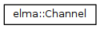
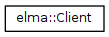
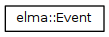
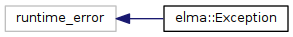
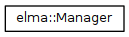
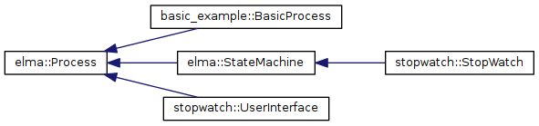
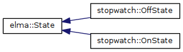
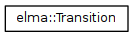

Elma
An event loop manager for embedded systems
Class Hierarchy
Go to the textual class hierarchy








Developed by
Eric Klavins
for UW ECE P 520
Generated on Fri Mar 22 2019 00:58:01 for Elma by
Doxygen
1.8.13